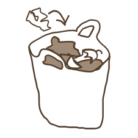
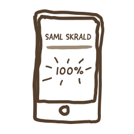

NAVN
NAVN
SÅDAN GØR DU:
1. Saml skrald i en pose.
2. Gå ind på "scanner"
i menuen eller tryk på "Scan skraldespand" knappen ovenfor.
3. Scan stregkoden på skraldespandens
QR-scanner.
4. Smid skraldeposen
i skraldespanden.
5. Tjek evt. status på din skraldeindsamling.
6. Indløs din præmie!